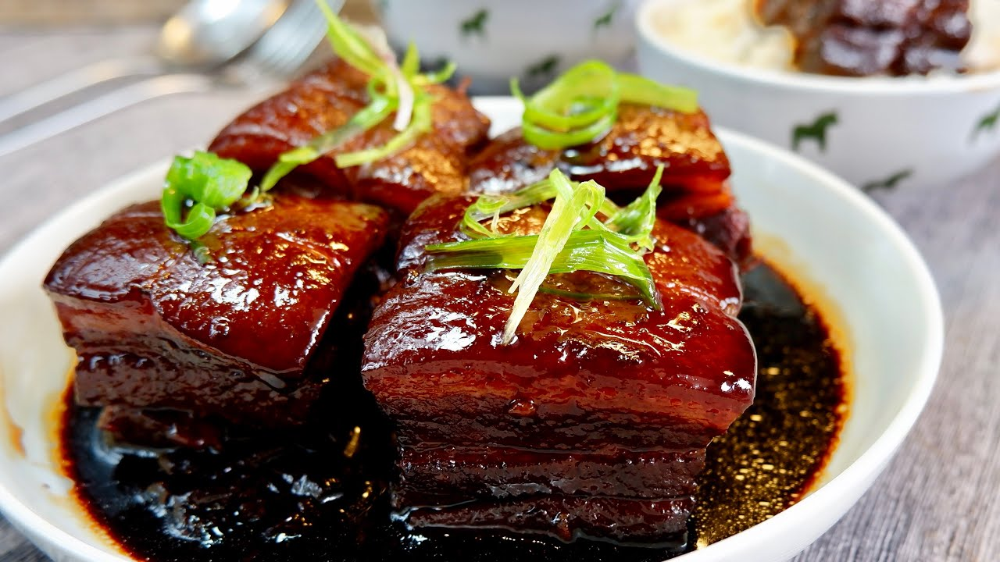

#27 - BRAISED (DONGPO) PORK BELLY - 東坡肉
This dish originated in Hangzhou China in the 11 century. It is named after a famous poet Su Dongpo. This version of braised pork belly is so tender that it melts in your mouth. It will definitely impress your guests in a dinner party.

INGREDIENTS:
- 2 catty (600g) Pork belly
- 2 TBSP red yeast rice 紅糟米
- Muslin soup bag
- 1 TBSP Shao Xing wine紹興酒
- 1 tsp salt
- 2 star anise
- 1 Chinese cinnamon stick 桂皮
- 3 cups water
- 1 TBSP dark soy sauce
- 50g rock sugar
- 2 slices ginger
- 1 green onion
Directions:
- Wash the pork belly and blanch it in boiling water for 2 min. Rinse in cold water, use tweezer to pull out the hair that remains on the pork.
- Cut the pork into 1 ½ x 1 ½ -inch size and put in a pot.
- Cut a piece muslin cloth from soup bag, put the red yeast rice in the middle, and tie it up with a string.
- Put all the other ingredients into the pot with the pork and add water to cover the pork.
- Bring it to boil and simmer for 40 min – 1 hour.
- Skim off the scum from the top of the pork as it forms.
- Remove the pork from the pot and arrange it skin side up in a bowl or casserole. Pour the sauce on top and steam for 1 hour. At this point, the pork should be very tender.
- Pour out the sauce into a small saucepan and condense it to about ½ cup.
- Pour the sauce on top of the meat and serve hot.
Note:
- If you have time before serving after step 7. Pour the sauce in a tall jar and to put the jar in the refrigerator to let the fat solidify. Remove the solid fat from the top and resume to step 8.
- This dish goes well with the steam bread (see recipe 20).